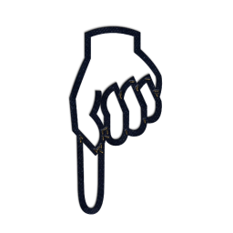

Code Wrangled
(Notes down yonder ...)spot-ON merchandising
An in-house merchandising-company portal for managing schedules,time reporting, and communications for independent contractors and administrative office personnel. The app is not public, but intended for internal use within a merchandising company, utilizing separate logins and views for admins and contractors.
Technologies used: HTML(.erb), CSS, Ruby on Rails, jQuery.js, PostgreSQL
UpgrAID
An online support community for our self-improvement quests--using posts to groups, comments, personal messaging and live chatrooms to connect users with similar goals. The app uses an algorithm based on user input and keywords to automatically match users with groups based on their goals. Badges are awarded for various achievements and for helping others to achieve theirs. This was the final project for The Iron Yard (October 2015 Front-End Engineering Cohort)
Technologies used: HTML/CSS, React.js, Backbone.js, jQuery.js, Python, Django, PostgreSQL
Web Site GithubPiccoli Morsi
Online menu for an imaginary Italian bistro that caters to dog owners, allowing them to bring their pets along, and offering dishes on the menu especially for their four-footed friends. This was the first group project for The Iron Yard (October 2015 Front-End Engineering Cohort)
Technologies used: HTML/CSS, jQuery.js, Mustache.js, JSON api
Name That Toon!
Just for fun! A quiz game mixing images of cartoon characters and audio files of cartoon theme songs, selected randomly. Images and audio are served via links to various cartoon fan sites. Won 2nd prize at The Iron Yard hackathon!
Technologies used: HTML/CSS, React.js, Backbone.js, web scraping
Hit Me Up!
A Simple contact list utilizing a remote database
Technologies used: HTML/CSS, jQuery.js, Mustache.js, AJAX, Parse.com (cloud db)
WeThePeople
An assignment to create a landing page for a website. The blue button opens a modal iFrame, containing a short story published on a science fiction website. Custom CSS tweaks keep the blue-grey text & the modal button inside the white flag stripe at all viewport widths.
Technologies used: HTML/CSS, Bootstrap
Notes Wrangled
(Code That-a-way...)Wave Mechanics Union - Further to Fly (2012)
The long-awaited second album from Wave Mechanics Union! Here are graceful and sophisticated jazz retellings of rock, prog, and pop classics as spun by an orchestra of 30 musicians. Vocalist Lydia McAdams and a large collection of talented instrumentalists are joined on two tracks by special guest Jon Anderson (the voice of Yes). The striking arrangements, penned by Ryan Fraley and Ralph Johnson, show a deep love for both the source material and the conventions of modern jazz orchestration. A surprising and eclectic group of songs from Paul Simon, Ben Folds, Suzanne Vega, Yes, King Crimson, Thomas Dolby, Gentle Giant, Tom Waits, Jimi Hendrix, Fiona Apple, Dire Straits, Steely Dan, and Queen. The closing track, "The Show Must Go On" was chosen by an internet poll in 2009.
Technologies used: Finale, ProTools, Alesis ADAT HD24, Actual musical instruments played by humans.
Wave Mechanics Union - Second Season (2008))
The debut CD, Second Season, features progressive and classic rock masterworks reimagined as jazz. Supported by a full-scale jazz orchestra, vocalist Lydia McAdams performs repertoire from Yes, Rush, The Who, Pink Floyd, King Crimson, The Police, Led Zeppelin, and more. Arrangements by Ryan Fraley and Ralph Johnson. A stylish love letter to both the jazz idiom and the layered density of progressive rock.
Technologies used: Finale, ProTools, Alesis ADAT HD24, Acoustic instruments moving air.